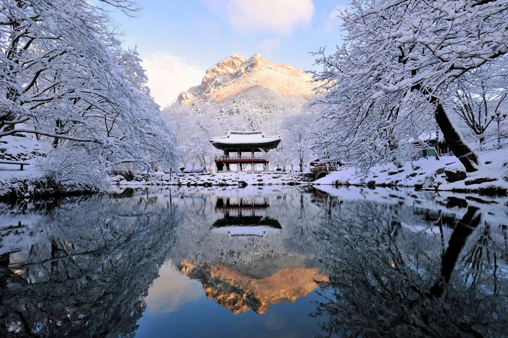
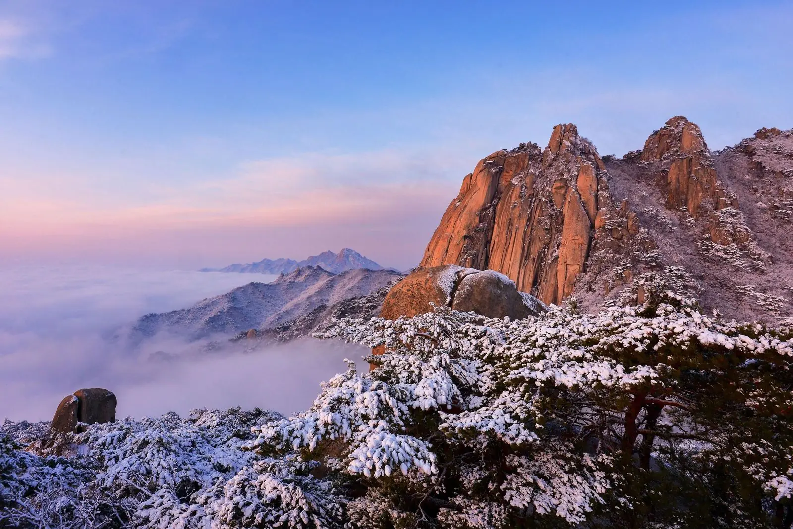
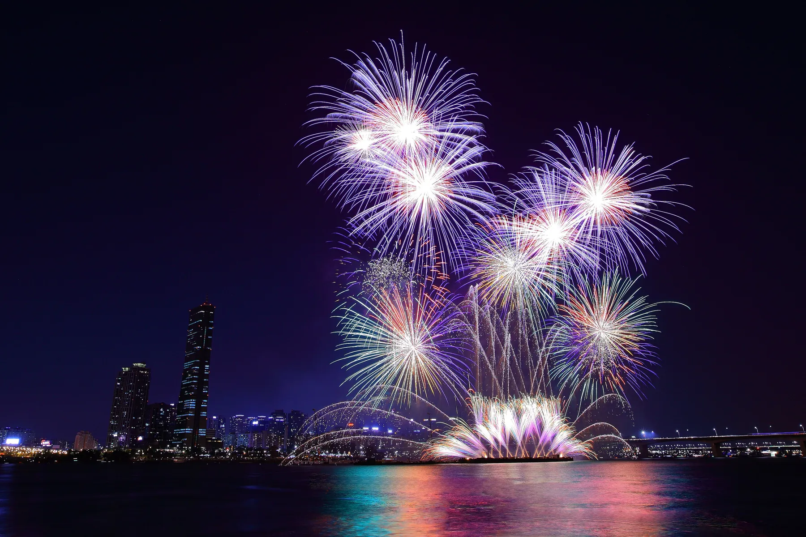
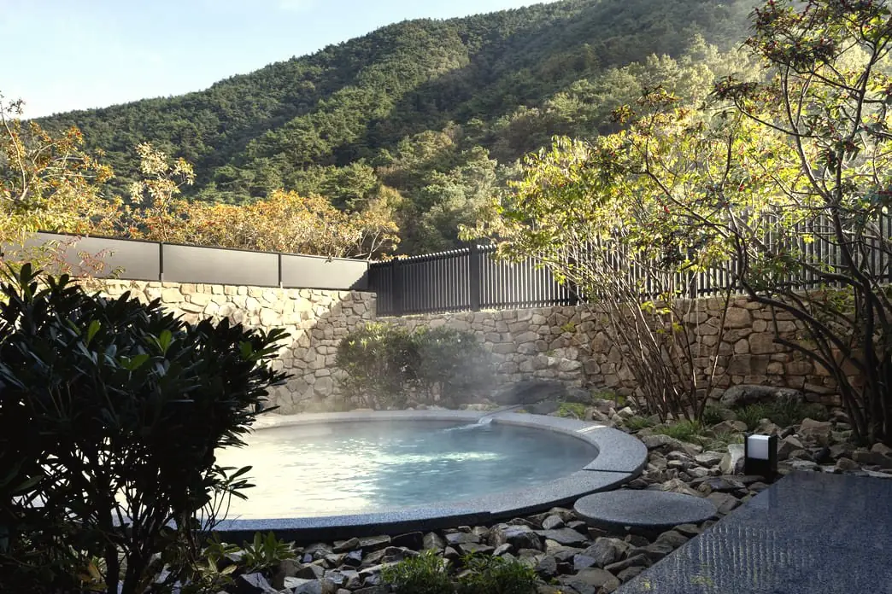
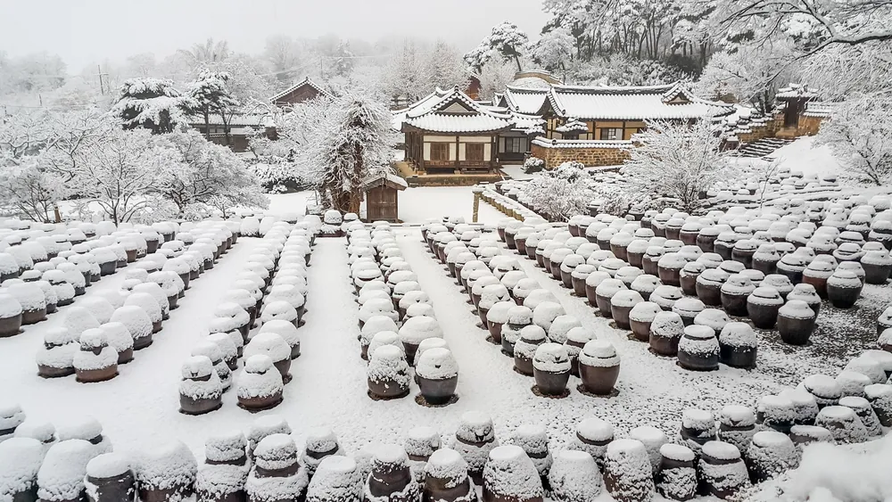
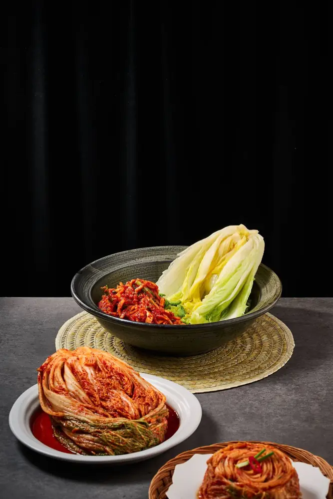
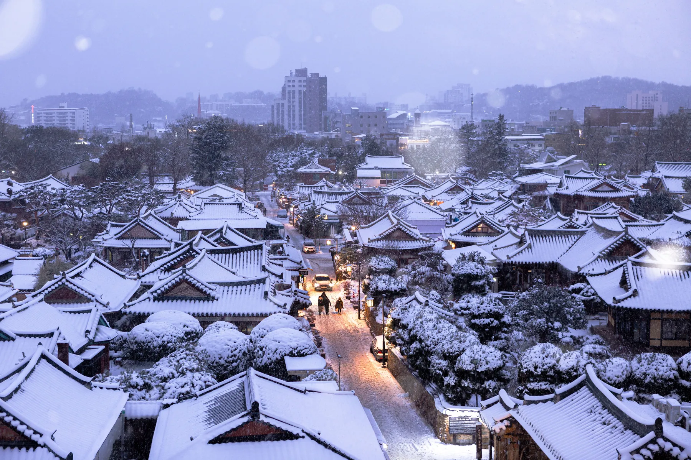

December is when Korea turns clear, cold and luminous. Snow settles on the mountain temples, the ski slopes of Gangwon open, Seoul lights up from Gwanghwamun to the Cheonggye stream, and the year closes with a bell rung at midnight. Here is what to expect, what is worth planning around, and how to stay warm through all of it.

Baekyangsa under the first snow of winter
Know what December feels like
December in Korea is cold and dry, with clear skies far more often than grey ones. Seoul sees rain or snow on about eight days in the month, and the air is crisp and bright. The mountains of Gangwon are colder and snowier; Jeju and Busan stay noticeably milder. Daylight is short, with the sun setting around five in the afternoon in Seoul, so the best days begin early and end somewhere warm.
Average December temperatures
City
Daytime high
Overnight low
Seoul
4°C / 39°F
−4°C / 25°F
Busan
10°C / 49°F
−1°C / 30°F
Jeju
11°C / 52°F
6°C / 42°F
Pack for dry cold
A long down coat, thermal layers, a warm hat and gloves, and boots with good grip for icy pavements. Indoors runs warm, with heated ondol floors in hanok and heavy heating in shops and restaurants, so layers you can take off matter more than one heavy sweater. Every convenience store sells small disposable hand warmers, and Koreans carry them all winter.
Look after your skin
The winter air is very dry. A richer moisturiser, a lip balm and a sheet mask in the evening go a long way, and Korean pharmacies and beauty stores are the best place in the world to buy all three. See our wellness shopping guide.
Know when it gets busy
Early December is quiet and one of the most rewarding weeks of the year to travel. Christmas Day is a public holiday in Korea, Korean schools break up for winter in late December, and the week between Christmas and New Year is the busiest of the month, especially at ski resorts and on the road east to the coast. Book stays and restaurants for that week well ahead.
Ski the Gangwon mountains
Korea's ski season opens in late November or early December, depending on snow, and runs into March. In the 2025 season Yongpyong and Phoenix opened on 21 November, High1 on 28 November, and Vivaldi Park and Alpensia on 4 December. Most of the major resorts sit in the mountains of Gangwon, home of the 2018 Winter Olympics, and the best of them are a comfortable drive or a fast train ride from Seoul.

Dawn over the snow covered peaks of Gangwon
Yongpyong, Pyeongchang
Korea's largest and longest established resort, and the one with the most varied terrain, from gentle beginner runs to the slalom slopes used in the 2018 Olympics. About two and a half hours by car from Seoul, or a high speed train to Jinbu station followed by a short transfer.
High1, Jeongseon
The highest slopes in the country and the most reliable snow, with long runs and wide views over the Taebaek mountains. Further from Seoul, at around three hours by car, and well suited to a stay of several days.
Alpensia, Pyeongchang
Smaller and calmer, with the Olympic ski jump on its edge and slopes made for families and first timers. A good base for a winter stay that mixes a few hours of skiing with rest.
Vivaldi Park, Hongcheon
The closest of the large resorts to Seoul, at around an hour and a half by car. Lively on weekends and practical for a day of skiing during a city stay.
How we arrange a ski day
A private transfer from your hotel, rental and lift passes ready on arrival, an English speaking instructor for any level, and a hot spring or a long dinner waiting at the end of the day.
Celebrate Christmas in Seoul
Christmas in Korea is a public holiday and a romantic one, closer to a night out for couples than a family gathering. Seoul spends December lit up. In recent years the city's Seoul Winter Festa has run from mid December into early January, with a Santa Village market and light shows at Gwanghwamun Square, a lantern festival along the Cheonggye stream with around 500 lantern sculptures in 2025, and an open air ice rink at Seoul Plaza.
Walk the lights at Gwanghwamun and the Cheonggye stream
The palace gate, the square and the stream that runs east from it form one long evening walk, best taken after five when the lights come on. Dress warmly and finish somewhere with a heated floor.
See the department stores dressed for the season
Korea's department stores compete over their winter displays. The Shinsegae building in Myeongdong turns its whole facade into a moving light show, and The Hyundai Seoul in Yeouido stages a Christmas market on its upper floor. Both pair well with an afternoon of shopping and a tax refund.
Book a festive table early
Christmas Eve is one of the most reserved nights of the year in Seoul. Hotel dining rooms and the city's tasting menus fill weeks ahead, and we hold tables for clients as soon as dates are set.
Welcome the New Year
Korea marks the turn of the solar year twice over: once at midnight with a bell, and again at dawn with the first sunrise. The lunar New Year, Seollal, comes later in winter and is a quieter family holiday.

Fireworks over the Han River
Hear the Bosingak bell at midnight
At midnight on 31 December the great bell at Bosingak pavilion in Jongno is struck 33 times, a tradition carried over from the Joseon era, when the bell marked the opening of the city gates each morning. The crowds are large and cheerful; we arrange a warmer vantage point nearby for those who prefer one.
Watch the first sunrise of the year
Koreans travel through the night to see the first sunrise, haedoji, on the east coast at places such as Jeongdongjin, or from Seongsan Ilchulbong on Jeju. It is cold, early and unforgettable, and best paired with a warm room booked close by.
Eat tteokguk on New Year's Day
A clear soup of sliced rice cakes, eaten on the first morning of the year. By tradition, finishing your bowl makes you one year older.
Warm up in hot springs and bathhouses
Winter is the season Korea's bathing culture was made for. Natural hot springs rise in towns across the country, such as Onyang, Suanbo and Icheon, and some of the newest retreats pipe spring water into every room. In the cities, the jjimjilbang, a bathhouse with heated rooms, saunas and a place to sleep, is where Koreans spend a cold Sunday.

A private hot spring retreat in the mountains
Stay at a hot spring retreat
A night or two at a hot spring retreat after a few days in Seoul or on the slopes is the most restorative thing you can do in a Korean winter. We choose places with private baths, quiet grounds and a kitchen worth staying in for.
Try a jjimjilbang properly
A first visit is easier with someone who knows the etiquette: what to wear where, which rooms to try and in what order, and how to ask for a body scrub. We can arrange a private session at a premium spa for those who prefer one.
Join a kimjang table
In late November and early December, Korean families gather to make the winter's kimchi together, salting cabbage, mixing the seasoning and sharing the first taste. The custom, kimjang, is on UNESCO's list of the intangible cultural heritage of humanity, inscribed in 2013.


Make kimchi with a family or a chef
We arrange a private kimjang in a family home or a chef's kitchen, followed by a meal built around what you made, with a jar packed to travel. Read more on Korea's winter table in our guide to eating in Korea.
Find the quiet in a winter temple stay
Mountain temples are at their most beautiful under snow and at their quietest in December. A night at a temple, with dawn chanting, tea with a monk and temple food, is one of the most restful things a winter journey can hold, and the rooms are heated through the floor.

A hanok village under the first snow
Stay on into January
January is colder still and the ski season is at its height. Gangwon's ice festivals, such as the Hwacheon Sancheoneo Ice Festival, usually open in early January, and the lights of Seoul often stay up into the first week of the month. A journey that begins before Christmas and ends after New Year sees Korea's winter at its most complete.
Ask the common questions
Is December a good time to visit Korea?
Yes. December is cold, dry and usually clear, with festive lights across Seoul, the ski season opening in Gangwon, hot springs at their best and mountain temples under snow. Early December is quiet; the week between Christmas and New Year is the busiest.
How cold is Korea in December?
Seoul averages a daytime high of about 4°C (39°F) and an overnight low of about −4°C (25°F). Busan and Jeju are milder, with Jeju highs around 11°C (52°F). The Gangwon mountains are the coldest and snowiest part of the country.
Does it snow in Seoul in December?
Sometimes. Seoul sees rain or snow on about eight days in December, and snow that settles is more likely later in the month and in January. For reliable snow, head to the mountains of Gangwon, where the ski resorts open from late November.
When does ski season start in Korea?
Most resorts open between late November and early December, depending on snow. In the 2025 season Yongpyong and Phoenix opened on 21 November, High1 on 28 November, and Vivaldi Park and Alpensia on 4 December. The season usually runs into March.
What is there to do in Seoul at Christmas?
Walk the lights and Christmas market at Gwanghwamun Square and the lantern festival along the Cheonggye stream, skate at Seoul Plaza, see the light show on the Shinsegae facade in Myeongdong, and book a festive dinner well ahead. Christmas Day is a public holiday in Korea.
What happens in Korea on New Year's Eve?
At midnight the Bosingak bell in Jongno is struck 33 times while crowds count down in the streets. Many Koreans then travel to the east coast or to Jeju to watch the first sunrise of the year, and eat tteokguk, rice cake soup, on New Year's morning.
Travel With IEUM
Plan a private December in Korea
Snow in the mountains, hot springs, a kimjang table and the bell at midnight, arranged end to end with a concierge beside you throughout.